Introduction to Filament Grouping Strategy for Dual Nozzle Printers
1. Background
When switching between different filaments for printing on a single nozzle (hot end) printer, it is necessary to use a certain amount of new material to flush the residual material in the hot end, to avoid color mixing during printing. The flushing values vary between different materials, and the specific values can be viewed on the filament page of Bambu Studio. You can refer to the wiki to learn more: Reduce Waste during Filament Change
For a dual-nozzle (hot end) printer like the H2D, the optimal way to print two filaments is to print different filaments with different nozzles. In this case, switching between filaments only requires switching the nozzles rather than flushing the old filament with the new one. Switching nozzle printing can also reduce the number of filament flushes when printing more than two filaments. This article will introduce filament grouping strategies for dual-nozzle printers to achieve the most efficient or convenient multi-material printing method.
2. Multi-color printing sequence
Different printing sequences have different filament switching sequences, resulting in differences in the flushing volume. The slicer will calculate an optimal printing sequence based on the flushing volume between the filaments, to minimize the waste amount. For example, if the total flushing amount of filament sequence 1->2->3 is greater than that of 1->3->2, the latter will tend to be used as the printing sequence for this layer. For detailed information on manually adjusting print sequences, please refer to: Set the filament printing sequence for different layers
|
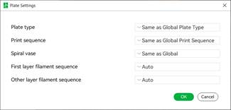 |
The flushing
amount obtained through the automatic allocation of the printing sequence |
|
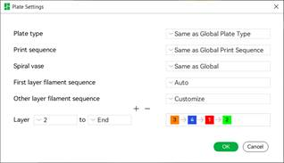
|
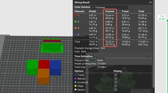 The flushing
amount obtained through the manual setting of the printing sequence |
3. Grouping restrictions on filaments
Due to the physical limitations of the printer, different nozzles have their own printable area limits (Introduction to the printable range of H2D dual nozzles). As shown in the figure below, when the part of the model printed with a filament is placed in the left nozzle or right nozzle only area, then it can only be printed using the corresponding nozzle.
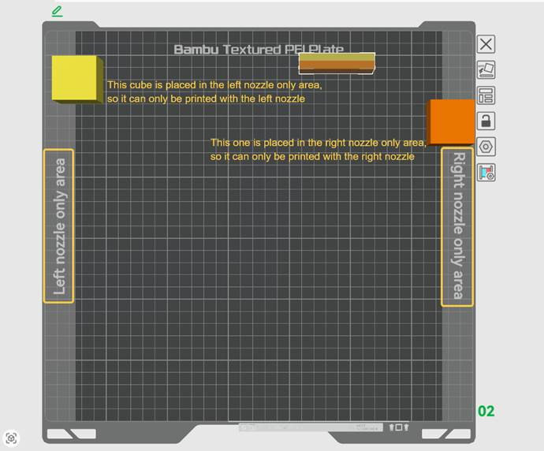
In addition, based on the physical design of the tool head and the characteristics of the material, each nozzle has other printable filament limitations, with specific limitations as follows
Group restrictions:
• TPU material can only be printed with the right nozzle. (Priority: High)
• CF and GF materials can only be printed with the left nozzle. (Priority: High)
• When the height of the part exceeds 320 mm, it should be placed in the printable area of the right nozzle. (Priority: Medium)
• When parts are placed in the left-nozzle-only or right-nozzle-only area, they need to be grouped to the corresponding nozzle for printing. (Priority: Medium)
• Filament can be printed with both left and right nozzles, it's recommended to print with the right nozzle. (Priority: Low)
4. Filament-saving mode
Since material switching between different nozzles does not require flushing, the entire flushing amount comes from switching filaments from the same nozzle. To reduce filament waste during switching, the filaments with a large switching volume should be assigned to separate nozzles. The default material grouping strategy used in Bambu Studio is the filament-saving mode. You can see a total of 3 modes in the floating window of the slicing button. Select "Filament-Saving Mode" and click on slicing to obtain the most filament-saving printing. The logic of this strategy is briefly introduced in the following sections.
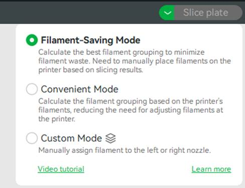
When you set the pairing relationship between AMS and the left and right nozzles, and synchronize the AMS information in Bambu Studio, the slicer can calculate how many filaments are connected to each nozzle. If no AMS is connected to the printer, the slicer defaults to allowing the nozzle to load one filament through the external spool. Then the slicer can achieve an optimal filament grouping to ensure minimum flushing waste is attained under the calculated printing sequence. The principle is to group the filaments with more common layers and larger flushing amounts into as many different nozzle groups as possible.
To sum up, the grouping algorithm mainly needs to consider the following points, and the priority of each point is reduced in order.
1. Whether the material is a non-printable filament for the nozzle;
2. The upper limit of filament in AMS connected to the nozzle;
3. Minimize the filament flushing amount;
4. Minimize the color gap (Delta E) to the filament in the AMS connected to the nozzle;
Since the grouping logic is more inclined to reduce the flushing amount rather than the closest color, after slicing, the user needs to check whether the filaments are placed in the corresponding AMS of the left and right nozzles according to the "Filament Grouping", and appropriately adjust the position of each filament in the AMS. Otherwise, the filament automatically assigned to the nozzle may not be selected in the sending task window.
As shown in the following GIF, once the sliced filament is assigned to a specific nozzle, it cannot be forcibly changed to a filament from another nozzle when sending the task. Even if there is a filament of a closer color from the other nozzle. So we can only manually adjust the position of filaments in AMS to achieve the most filament-saving printing.
5. Convenient mode
Unlike the filament-saving mode, the convenient mode groups filaments entirely according to the filaments placed in the AMS, regardless of the sliced model. Under this strategy, efforts will be made to match the filament grouping results as closely as possible with the filaments placed in AMS (color, type, etc.).
This option tends to group based on the user's existing filament placement, which may waste more filaments for flushing, and in most cases, there is no need to adjust the position of the filaments separately. Suitable for scenarios where users are not near the printer and remotely initiate multi-material printing tasks. We suggest that you resynchronize the AMS filament information before using this mode for slicing. You can select "Convenient Mode" in the floating window of the slicing button, and the sliced filaments will be grouped according to the actual filaments placed in your AMS. After slicing, it can be seen that the optimal grouping (filament-saving mode) saves more filament amount compared to the convenient mode.
The grouping algorithm under this strategy mainly considers the following points, with the priority of each point decreasing in order:
1. Whether the material is a non-printable filament for the nozzle;
2. Consistency between sliced filaments and filament material types in AMS;
3. Minimize the color gap (Delta E) to the filament in the AMS connected to the nozzle;
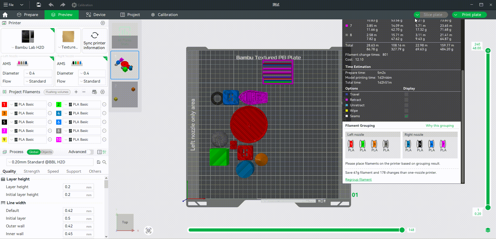
6. Custom mode
Suppose you are not satisfied with the auto filament grouping strategy. In that case, you can click on "Regroup filament" in "Filament Grouping", and then manually adjust the filaments in the left and right nozzles in "Custom". After slicing again, you can see that the optimal grouping (most filament-saving) method saves more filaments than manual grouping. Note: Filament-saving strategy only considers saving filaments, so sometimes there may be more filament changes in filament-saving mode than in convenient or manual mode, which is normal.

You can also directly select "Custom Mode" in the floating window of the slicing button, which will allow you to customize the group of slicing filaments to the left and right nozzles before slicing.
|
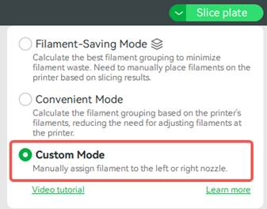
|
|

7. Plate settings and global settings
For different scenarios, the grouping strategy is divided into different levels of parameters: plate settings and global settings. Before slicing, if you manually set a strategy for the plate, the plate settings will override the global settings.
On the right side of each plate, after clicking the corresponding icon, there will be a pop-up window, where you can see the filament grouping mode used by the current plate. You can set the mode for a single plate, including Auto (Filament-saving and Convenient mode), Custom, and Same as Global.
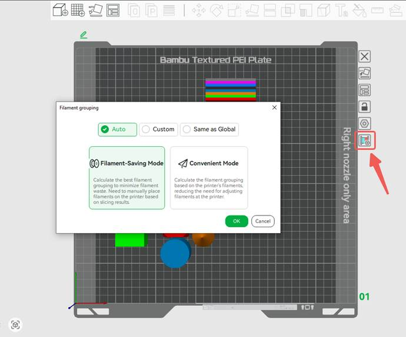
|
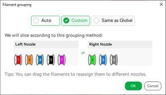 |
|
If you have separately set the grouping mode for a certain plate, after slicing the single plate, the floating window at the slicing button will prioritize displaying the strategy of the current plate. However, there will be a global setting icon placed after the corresponding mode to remind the user which strategy is used for global slicing. If no separate mode is set for the plate, the floating window will prioritize displaying the global settings.
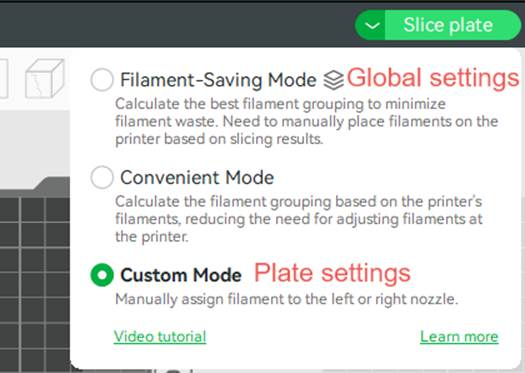
When slicing all plates, always display the global grouping strategy to facilitate the setting for all plates. But the filament grouping method set for a single plate still takes effect.
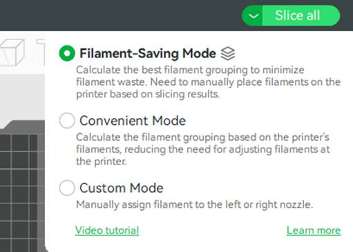
In the manual grouping window, only the filaments in the current plate are displayed when slicing a single plate, and all filaments are displayed when slicing all.
|
Slice plate |
Slice all |
|
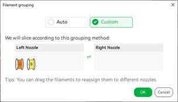
|
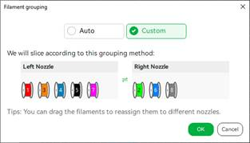
|